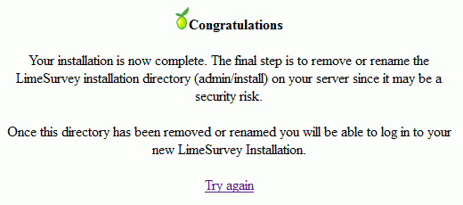
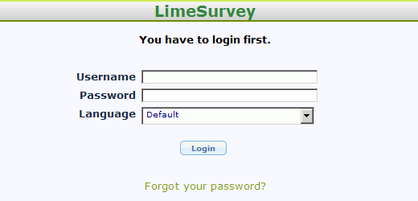
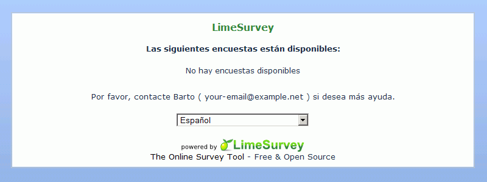
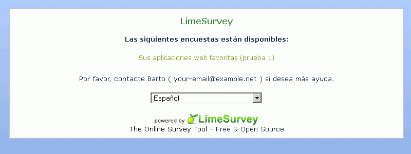
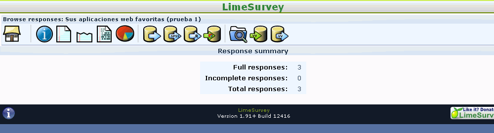
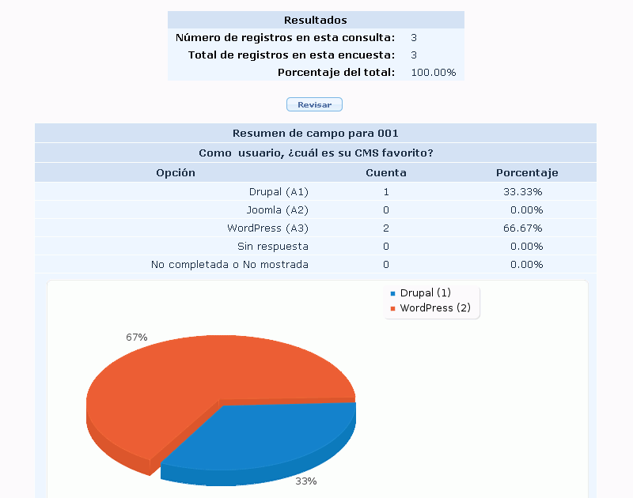
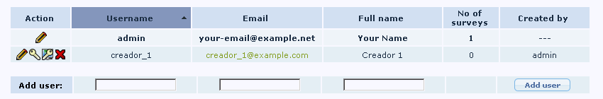
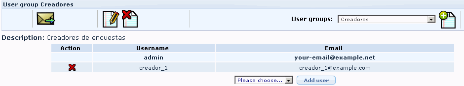
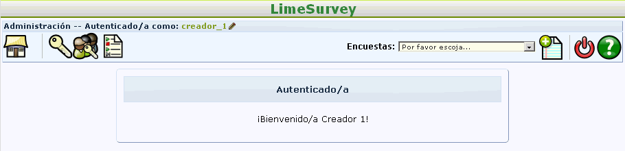

Se entregará un archivo comprimido (cuyo nombre sea el nombre del alumno) que contenga:
las nueve capturas de pantalla.
Nota: Las capturas solicitadas serán capturas del escritorio completo, en las que se vean tanto el navegador con la información solicitada, como algunos iconos del escritorio.
la carpeta limesurvey comprimida.
la copia de seguridad de la base de datos iwb_limesurvey-1.sql.
1. Instalación
Entre en phpMyAdmin como usuario root y cree un usuario de MySQL con nombre iwb_limesurvey-1, contraseña iwb_limesurvey-1 y base de datos iwb_limesurvey-1.
Descomprima el archivo comprimido limesurvey_XXXX.zip.
$rootdir: C:/ ... /limesurvey (se deben utilizar barras, no contrabarras)
$defaultuser: admin
$defaultpass: admin
Abra limesurvey/index.php en el navegador. Se inicia el proceso de instalación.
Haga una captura de pantalla donde se vea el formulario de entrada y guardela como limesurvey-1a.png:

Renombre el directorio limesurvey/admin/install y abra la dirección limesurvey/admin/ en el navegador.
Haga una captura de pantalla donde se vea el formulario de entrada y guardela como limesurvey-1b.png:

2. Configuración inicial
Entre en LimeSurvey como usuario admin.
Cambie al idioma español como idioma predeterminado
Ponga su nombre como nombre de administrador
Abra en otro navegador la dirección limesurvey/ y haga una captura de pantalla en la que se vea el formulario de entrada y guardela como limesurvey-2.png:

3. Crear una encuesta
Entre en LimeSurvey como usuario admin.
Cree una nueva encuesta:
Survey title: Sus aplicaciones web favoritas (prueba 1)
Description: Queremos saber cuáles son las aplicaciones web más populares. Gracias por participat en esta encuesta
List survey publicly: Yes
Añada un nuevo grupo de preguntas a la encuesta:
Title: CMS
Description: Content Management Systems
Añada una nueva pregunta al grupo:
Code: 001
Title: Como usuario, ¿cuál es su CMS favorito?
Question type: List (dropdown)
Añada las posibles respuestas a la pregunta:
Answer option: Drupal
Answer option: Joomla
Answer option: WordPress
Publique la encuesta
Abra en otro navegador la dirección limesurvey/ y haga una captura de pantalla en la que se vea el formulario de entrada y guardela como limesurvey-3.png:

4. Contestar la encuesta
Conteste la encuesta tres veces, contestando una respuesta dos veces y otra una sola vez.
Entre en LimeSurvey como usuario admin, muestre la información disponible. Haga una captura de pantalla en la que se vea la información disponible de la encuesta y guardela como limesurvey-4a.png:

Muestre la información en forma de gráfico. Haga una captura de pantalla en la que se vea el gráfico y guardela como limesurvey-4b.png:

5. Crear un segundo usuario
Entre en LimeSurvey como usuario admin.
Cree un nuevo usuario
Username: creador_1
Fullname: Creador 1
Password: creador_1
con permiso para crear encuestas.
Haga una captura de pantalla en la que se vea la información de usuario y guardela como limesurvey-5.png:

Crear un grupo de usuarios Creadores / Creadores de encuestas y añada al usuario creador_1.
Haga una captura de pantalla en la que se vea la información del grupo y guardela como limesurvey-6.png:

Abra en otro navegador la dirección limesurvey/admin y entre como creador_1. Haga una captura de pantalla en la que se vea que ha entrado como ese usuario y guardela como limesurvey-7.png:

6. Crear una copia de seguridad
Entre en phpMyAdmin como usuario iwb_limesurvey-1, elija la base de datos iwb_limesurvey-1 y exporte las tablas con el método rápido al fichero iwb_limesurvey-1.sql.